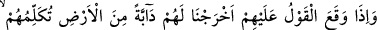
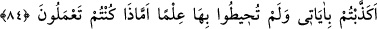
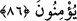

HESAP YERİNE
GELDİKLERİ ZAMAN
82. O söz başlarına geldiği (kıyamet yaklaştığı) zaman, onlara yerden bir dâbbe
(mahlûk) çıkarırız da, bu onlara insanların âyetlerimize kesin bir îman getirmemiş
olduklarını söyler.
83. O gün, her ümmet içinden âyetlerimizi yalan sayanlardan bir cemaat toplarız
da onlar toplu olarak (hesap yerine) sevkedilirler.
84. Nihâyet, (hesap yerine) geldikleri zaman Allah buyurur: Siz benim âyetlerimi,
ne olduğunu kavramadan yalan saydınız öyle mi? Değilse yaptığınız neydi?
85. Yaptıkları haksızlıktan ötürü, (azâba uğrayacaklarını bildiren) o söz
gerçekleşmiştir; artık onlar konuşamazlar.
86. Dinlensinler diye geceyi (karanlık) ve (çalışsınlar diye) gündüzü aydınlık
kıldığımızı görmediler mi? Îman eden bir kavim için elbette bunda birçok ibretler
vardır.
“O söz başlarına geldiği (kıyamet yaklaştığı) zaman,”
Başlarına gelmesinden maksad, “Allah’ın emri gelmiştir.” (en-Nahl, 16/1) âyetinde
olduğu gibi yaklaşmak ve yakın olmak demektir. “Söz”den maksad da kıyâmetten ve
müşriklerin acele olarak gelmesini istedikleri kıyametle ilgili türlü korkulu hallerdir.
Mânâ ise şöyledir: O sözün delâlet ettiği yenidin diriltilme ve vaadolunan azâb
yaklaşıp yakın olduğu zaman…
el-Müfredât’ta der ki: Sözün vâki olması/başlarına gelmesi, içerdiği husûsun
meydana gelmesi demektir. “
” lafzı Kur’ân’da çoğunlukla azâb ve musîbetler
hakkında kullanılmıştır. Bu âyette ‘sözü geçen kıyamet emâreleri belirdiği zaman’